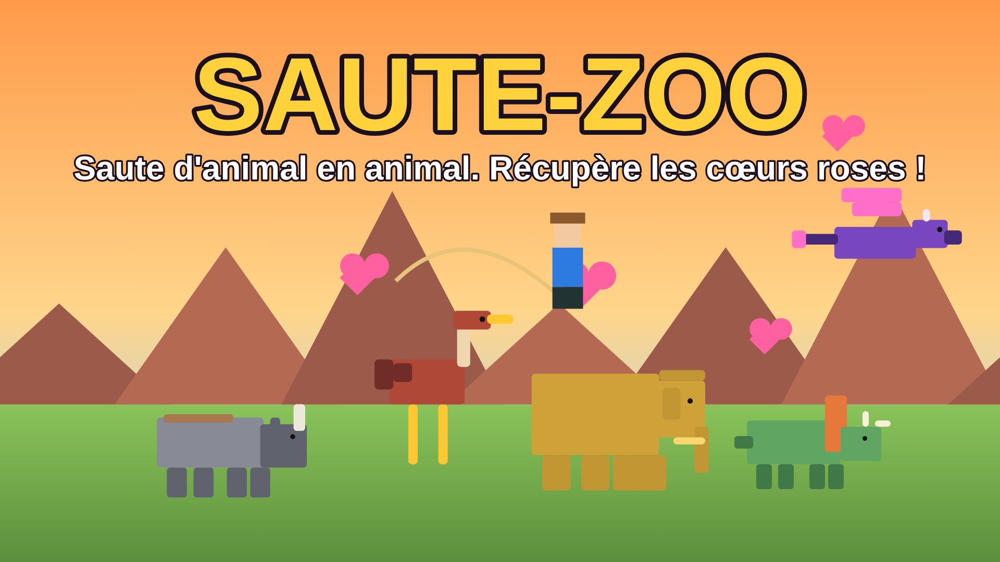
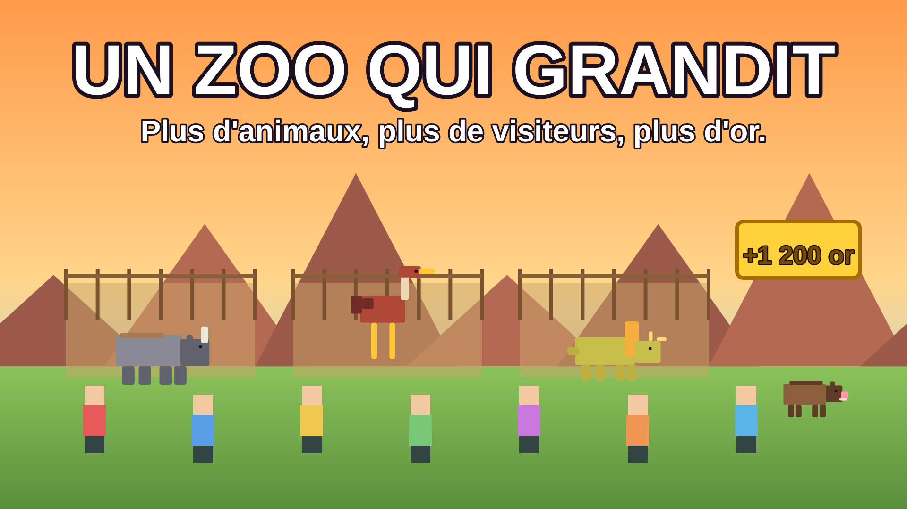
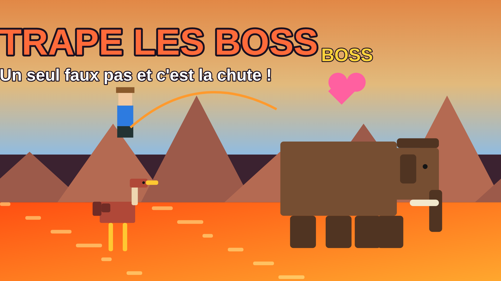

Tu as hérité d'un zoo vide. Pars en expédition, saute d'animal en animal et récupère ceux qui portent un cœur rose : ils rejoignent ton zoo, qui rapporte de l'or.
14 animaux × 3 versions4 boss4 zoneshistoire de 11 chapitresachats Robux facultatifs

Survol animé du zoo, puis ton zoo devant ta parcelle dans le parc central. La caisse se remplit même hors ligne.
Choisis une zone, appuie sur PARTIR. Le sol est mortel : ESPACE saute, maintenu il lasse l'animal suivant. 1 vie gratuite.
Monte un animal à cœur jusqu'à la barre pleine, puis RÉCUPÉRER avant qu'il ne s'échappe. Ou lance le lasso de capture (visée assistée).
Chaque animal rapporte de l'or par minute. Les doublons donnent des os pour monter les animaux en niveau ; l'or agrandit le zoo.
| Zone | Sol mortel | Animaux | Boss | Débloquée |
|---|---|---|---|---|
| Savane dorée | ronces | phacochère, zèbre, autruche, rhinocéros, lion | Éléphant Alpha | dès le début |
| Marais brumeux | eau | hippopotame, flamant, phacochère, crocodile | Crocodile Roi | 4 animaux |
| Désert rouge | sables mouvants | chameau, bouquetin, autruche, rhinocéros | Sphinx des sables | 9 animaux |
| Volcan | lave | tricératops, salamandre, wyverne, mammouth | Dragon Ancien | 15 animaux |
Les boss sont des courses spéciales : le boss apparaît en fin de zone, il faut cumuler 9 s en selle alors qu'il te projette en arrière toutes les 3 s.
Toucher le sol perd une vie ; à zéro, mort, avec 12 s pour acheter « Continuer ».
Or : améliorations du zoo (enclos, visiteurs, caisse, boutique de souvenirs, lassos, cœurs). Os : niveaux des animaux.
11 chapitres, cadeau du jour avec série, 3 quêtes quotidiennes tirées au sort.
Tourbillons (bonus de saut) dans la savane et le désert, crocs surgissants dans le marais, météores dans le volcan.
Pass : Zoo Premium, Or ×2, Vie supplémentaire, Lasso doré. Produits : or, os, boost ×2, Continuer.
Tout est validé côté serveur : portée, état du joueur, vies, captures, achats, reçus sans doublon, sauvegarde réessayée.


| Contrôle | État | Détail |
|---|---|---|
| Compilation Luau des 30 scripts (Lune) | Exécuté | 0 erreur |
| 22 tests de logique pure (Lune et fengari) | Exécuté | économie du zoo, zones, animaux, boss, prix |
| stylua, selene, rojo build | Exécuté | 0 erreur (selene avec une bibliothèque standard minimale écrite à la main) |
| Simulation serveur et client (5 scénarios) | Exécuté | captures, boss, vies, mort, « Continuer », zoo, histoire, achats, menus, intro |
| Relecture du code | Analysé | boucles, connexions, API, validations serveur |
| Jeu dans Roblox Studio | À tester | physique réelle, caméra, rendu, tactile, sons, DataStore et achats réels |